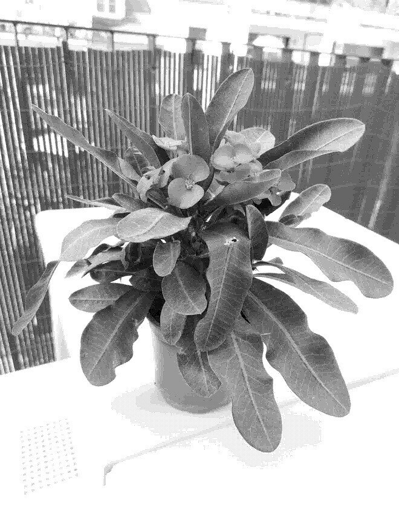

Euphorbia milii

Care
Also known as the crown of thorns. Produces beautiful flowers.
- Likes a fair amount of direct sunlight, ideally 3-4 hours each day
- Can withstand temperatures between 10-32°C, thrives at 18-24°C
- Allow the soil to dry at a depth of about an inch before watering
- In winter, let it dry at a depth of 2-3 inches before watering
- Poisonous to pets, the sap can also cause skin irritations